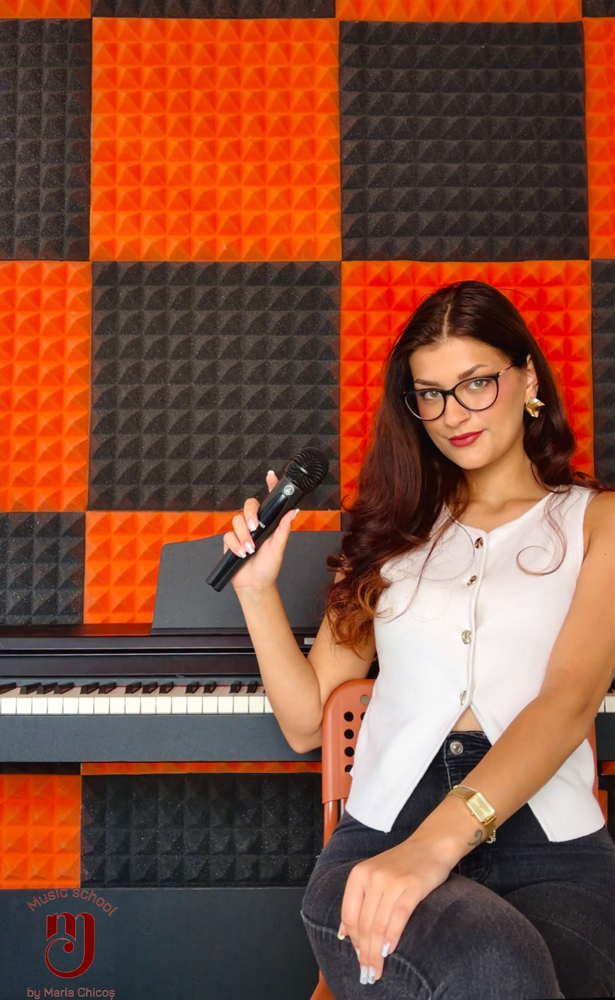
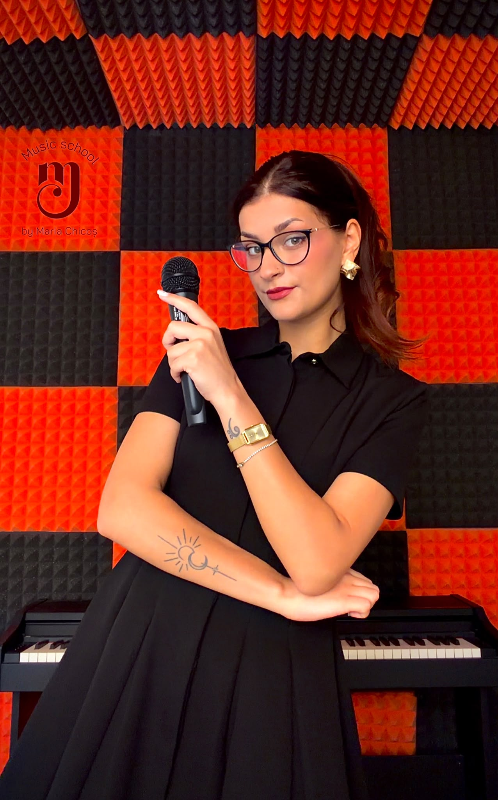
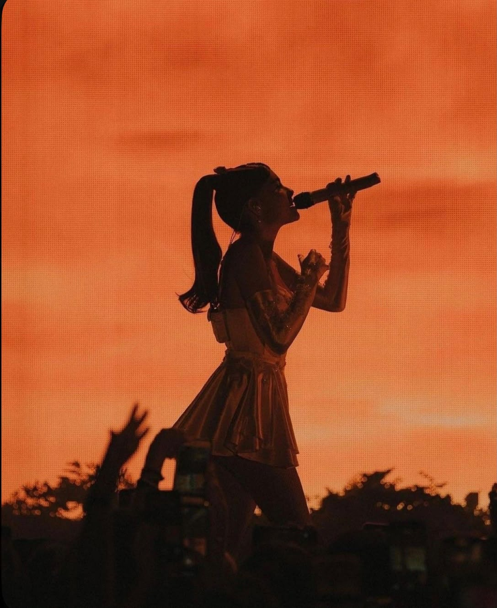

Despre profesoară
Profesor de canto · pian · teorie muzicală
Studentă a Universității Naționale de Muzică din București, la specializarea Compoziție – Muzică Ușoară, Maria are peste 15 ani de experiență în domeniul muzical, dintre care peste 4 ani de experiență în predare.
Pregătirea sa muzicală a început în cadrul liceului de muzică, unde a studiat timp de patru ani canto clasic, obținând atestare în acest domeniu.
Parcursul ei artistic a continuat prin studiul muzicii ușoare, participarea la numeroase concursuri și experiența de scenă — o formare solidă care astăzi stă la baza modului în care predă.
Parcurs
4 ani de studiu al canto-ului clasic în cadrul liceului de muzică, cu atestare în canto clasic.
Peste 100 de participări la concursuri naționale și internaționale de interpretare muzicală, cu numeroase premii obținute.
Peste 4 ani de activitate în trupa El Negro, experiență care a contribuit la dezvoltarea sa ca vocalistă și performer.
Trainer în cadrul programelor interculturale Erasmus desfășurate în peste 10 țări, acumulând experiență în contexte și stiluri muzicale diverse.
Cursuri de evaluare comportamentală și profiling, arta vorbitului în public, gestionarea emoțiilor, artă teatrală și prezență scenică.
Ce predă
Dezvoltarea tehnicii vocale, respirației, dicției și interpretării, alături de exerciții de mișcare scenică și prezență artistică.
Dezvoltarea bazelor tehnice și a abilităților de interpretare, adaptate nivelului, vârstei și ritmului de învățare al fiecărui elev.
Dezvoltarea cunoștințelor muzicale și înțelegerea elementelor de bază ale limbajului muzical, într-un mod adaptat nivelului fiecărui elev.
Cum predă
Pentru Maria, muzica înseamnă mai mult decât tehnică. Fiecare elev are propriul ritm de învățare, propria personalitate și propriul mod de a se exprima, iar lecțiile sunt adaptate în funcție de acestea.
Formarea ei muzicală, experiența de scenă și pregătirea complementară în evaluare comportamentală, public speaking și gestionarea emoțiilor îi permit să acorde atenție deopotrivă dezvoltării artistice și încrederii pe care elevul o capătă în propriile forțe.
Scopul Mariei este să îi ajute pe elevi să descopere nu doar abilități muzicale, ci și încredere, creativitate și bucuria de a face muzică.
Galerie


